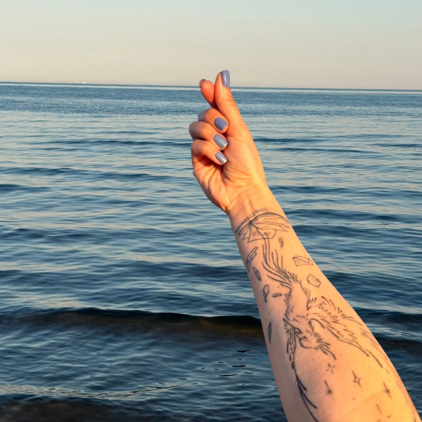

Статьи и подкаст
Длинные тексты и выпуски подкаста. Подписка бесплатная — новые материалы приходят на почту.
Подписаться ↗Истории о решениях, кризисах, бизнесе и эмиграции — и о том, как опора, решение и амбиция складываются в одну систему. Без чужих рецептов и «успешного успеха».
Они помогают понять, почему в работе с клиентами я смотрю не только на бизнес-процессы, но и на человека за ними — его выбор, ресурсы и реальные ограничения.
Почему иногда важнее выйти из чужих ожиданий, чем ещё сильнее стараться им соответствовать.
Читать на Substack ↗IIКак собственный бизнес научил меня отличать ощущение контроля от того, на что реально можно повлиять.
Читать на Substack ↗IIIКак выбирать направление без гарантий, когда привычные опоры исчезли.
Читать на Substack ↗IVКак не отказываться от своего голоса и опыта ради чужих представлений о правильной роли.
Читать на Substack ↗VКак переходить от попыток просто справляться к решениям, которые опираются на собственные ценности.
Читать на Substack ↗VIКак вовремя замечать, где сами замедляем движение ради чужого маршрута.
Читать на Substack ↗
Предпринимательство, идентичность основателя, деньги, лидерство и внутренние механизмы решений.
Длинные тексты и выпуски подкаста. Подписка бесплатная — новые материалы приходят на почту.
Подписаться ↗Короткие мысли, наблюдения из практики и анонсы — в ритме нескольких постов в неделю.
Читать канал ↗Разговоры и разборы в видеоформате.
Смотреть ↗Начните с бесплатной 30-минутной сессии-знакомства: разберёмся в вашем запросе и в том, какой формат работы вам подходит.